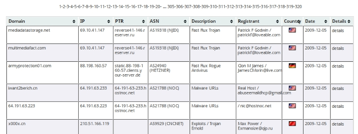
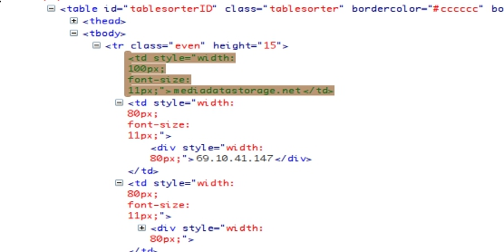

爬虫是一个非常有意思的话题。大家都知道在这个信息时代，数据就是宝藏，当你写好并部署完一批爬虫，然后敲下命令看着它们欢快而又卖力地去爬页面的时候，就像看到它们搬回了一堆堆的钻石原矿一样，绝对有快感的 --- 当然，咱说的是合法地抓取数据，而不是无耻地吸血 ^_^。
Web 发展之初，Perl 就得益于强大的文本处理能力而被用来编写各种各样的爬虫程序，今天这篇文章不会讨论真正的爬虫，因为这是一个非常复杂的系统，有非常多复杂的因素需要考虑，我们这篇文章将要说的是非常简单的从特定网页掘取你所需要的数据的方法, 而不是要实现一个完整而成熟的爬虫系统，当然对爬虫感兴趣的同学可以参看 CPAN 上的爬虫框架 Combine。
大部分的网页都是由一堆堆定义好的标签(Tag)和需要展示的内容所组成的, 这堆标签就是超文本标记语言（HTML/XHTML)，网页的作者提供内容，超文本标记语言负责告诉浏览器将这些内容渲染成丰富多彩的网页。超文本标记语言并不是为了用作数据交换而设计的，因此面对形形色色画里胡俏的网页，你要想写个程序把其中你感兴趣的内容抓出来还真是不容易，很传统的做法就是用 Perl 里的 LWP 模块把网页抓回来，然后用正则表达式去匹配出你想要的内容。但一旦碰到干扰因素很多的网页，用正则匹配的方式就很不方便了，挠破后脑勺也不一定能想出一句漂亮而优雅的正则表达式来实现你的目标。那有没有更方便的方式去定位某个 HTML 网页中的内容呢？
哈！当然有！知道 CSS，用过 jQuery 的朋友肯定对其中无比方便的 CSS 选择子倾爱有加，这个东东用来定位 HTML 中的元素实在是太方便了，那我们在 Perl 中怎样能用这样的方式去解析并挖掘特定网页中的内容呢？答案就是 Miyagawa 编写的 Web::Scraper 模块。
很简单：
$ sudo cpan Web::Scraper
让我们先设一个网页信息采集类的任务然后看看怎样用 Web::Scraper 来完成吧。
比如说我最近在做网络安全方面的分析，我需要收集最近的恶意软件，钓鱼或被挂马网站的域名列表，然后再进一步分析。那么我可能会去 Malwareurl.com 网站的这个页面收集它最近列出来的域名。页面中我们需要的信息以一个表格的方式呈现，看起来像这样：

我只需要表格中的第一个字段：Domain。祭出 Firefox 中的 Firebug 插件，很容易获知，我们所需要的信息都在一个 id 为 tablesorterID 的 table 中，并且我想要收集的域名，就是这个表格主体内容 tbody 的每一个 tr 的第一个孩子元素 td 的文本部分，看起来像这样：

那么我们的方法是这样：抓取这个页面，然后将该页面交给 Web::Scraper 来处理，解析出我们想要的内容，然后以所需的格式组织好输出就大功告成了，简单吧。
Web::Scraper 提供的方法很少很简单，就三个：scraper()，scrape()，process()。
该方法负责按照你提供的参数来创建 Web::Scraper 对象，我们将会用这个对象来完成网页的解析。Web::Scraper 对象是可以嵌套的。相当于你列一张需要解析内容的单子。
这个方法告诉 Web::Scraper 对象从所给的网页(可以是 URI 对象， HTML::Response 对象，或者是字符串)中解析出你想要的内容。相当于你把这个单子交给具体的执行人，让他按照这个单子上规定的内容把东西取出来。
建议将 URI 或者 HTTP::Response 对象作为参数传给 scrape() 方法，这样的话它会自动根据 HTTP 的 Content-Type 头和网页中的 Charset 字段来解决编码的问题，如果你直接传给它字符串形式的网页内容，你就得自己处理编码的问题了。
这个方法非常重要，通过它，我们可以用 CSS 选择子或者 XPath 语句来定位网页中的元素，从而取得我们需要的部分内容。相当于那个单子上所列出的具体的一项项工作内容，它告诉 Web::Scraper 对象该在网页中什么位置，取什么样格式(TEXT，HTML 或者 XML)的内容出来。
很简单，经过上面的分析，我们可以这样来表示我们所需要解析的域名信息：
process "#tablesorterID > tbody tr td:first-child", "domains[]" => "TEXT";
解释一下，上面语句的意思是：找到 id 为 tablesorterID 的表格，接着找到这个表格中的主体部分 tbody，取得这部分表格中所有的行 tr，然后取出每行的第一个 td 元素的文本内容，并把内容存到一个数组中，这个数组会被放到 Web::Scraper 对象调用 scrape 方法后返回的哈希中，并且你可以用 domains 作为 key 来从这个哈希中取到解析出的所有域名。
很简单：
URI->new("http://www.malwareurl.com/listing-urls.php");
我们把全部代码写出来：
#!/usr/bin/perl # filename: malscraper.pl use strict; use warnings; use URI; use Web::Scraper; my $url = "http://www.malwareurl.com/listing-urls.php"; my $worker = scraper { process "#tablesorterID > tbody tr td:first-child", "domains[]" => "TEXT"; }; print "Starting...\n"; my $result = $worker->scrape( URI->new($url) ); for my $domain ( @{ $result->{domains} } ) { print "$domain\n"; }
运行一下验证看看：
$ perl malscraper.pl
Starting...
mediadatastorage.net
multimediafact.com
armyprotection01.com
iwant2berich.cn
64.191.63.223
x000x.cn
91.213.126.93
print-design.cn
66.220.17.200
c24845.upd.host255-255-255-0.com
y7099.nb.host-domain-lookup.com
x2827.nb.host192-168-1-2.com
upd.netbios-wait.com
ciduninstall.com
movngs.cn
... 省略内容 ...
瞧！很简单很方便不是？:-)
OK，现在我们有新需求了，我需要抓取刚才那个表格中的 Domain，IP 和 Country 字段，怎么办？没关系，先来分析一下：
表格中的每一行就是 tbody 中 tr 标签的内容，也就是一个个的 td 块，我们需要这些 td 标签中的 TEXT 内容（Domain，IP）以及那面小国旗图片的URL中代表国家的两个简写字母（比如 http://www.malwareurl.com/img/flags/CN.gif 中的 CN）。
这样，解决方法就出来了，我们可以把 tr 所有的内容抓出来，然后在这些内容中解析出每一个 td 的文本部分以及代表 Country 的图片地址。重新构造一下我们的 scraper()：
scraper { process "#tablesorterID > tbody tr", "rows[]" => scraper { process "td", "cols[]" => 'TEXT'; process "td > div > img", country => '@src'; }; };
解释一下，上面我们使用了嵌套的 scraper，这是啥意思呢？第一个 scraper，我们先找到 id 为 tablesorterID 的表格，然后找到它的主体部分 tbody，并将 tbody 中代表表格每一行的 tr 解析出来丢给那个嵌套的 scraper，在嵌套的 scraper 中，我们再对 tr 这一行进行解析，取出这一行所有的字段，也就是所有的 td 标签的文本部分，存到一个数组里，这个数组会被作为一个数组引用保存在一个结果哈希中，其 key 就是 cols。同时，我们还取出每一行中唯一的图片URL，以 country 为 key， 也保存在结果哈希中。
此时，结果 $result 看起来像：
$result->{rows} = [ { 'country' => bless( do{\(my $o = 'http://www.malwareurl.com/img/flags/US.gif')}, 'URI::http' ), 'cols' => [ 'mediadatastorage.net', "69.10.41.147\x{a0}", "reverse41-146.reserver.ru\x{a0}", "AS19318 (NJIIX) \x{a0}", "Fast Flux Trojan\x{a0}", "Patrick F Godwin / patrickf\@loveable.com\x{a0}", "\x{a0}", "2009-12-05\x{a0}", 'details' ] }, { 'country' => bless( do{\(my $o = 'http://www.malwareurl.com/img/flags/US.gif')}, 'URI::http' ), 'cols' => [ 'multimediafact.com', "69.10.41.147\x{a0}", "reverse41-146.reserver.ru\x{a0}", "AS19318 (NJIIX) \x{a0}", "Fast Flux Trojan\x{a0}", "Patrick F Godwin / patrickf\@loveable.com\x{a0}", "\x{a0}", "2009-12-05\x{a0}", 'details' ] }, # ... omit the rest part of codes ...
于是，整个结构就很清晰了，只需要对结果集做一些处理便可以满足我们的需求了。
完整代码：
#!/usr/bin/perl # filename: malscraper.pl use strict; use warnings; use URI; use Web::Scraper; my $url = "http://www.malwareurl.com/listing-urls.php"; my $worker = scraper { process "#tablesorterID > tbody tr", "rows[]" => scraper { process "td", "cols[]" => 'TEXT'; process "td > div > img", country => '@src'; }; }; print "Starting...\n"; my $result = $worker->scrape( URI->new($url) ); printf "%-50s \| %-15s \| %-2s\n", "Domain", "IP", "Country"; print "-"x80, "\n"; for my $row ( @{ $result->{rows} } ) { my ($domain, $ip) = @{ $row->{cols} }[0,1]; my ($country) = $row->{country} =~ /\/(\w+)\.gif$/; $ip =~ s/\xA0$//; # truncate "\xA0" at the end printf "%-50s \| %15s \| %-2s\n", $domain, $ip, $country; }
运行一下看看效果:
$ perl malscraper.pl
Starting...
Domain | IP | Country
--------------------------------------------------------------------------------
mediadatastorage.net | 69.10.41.147 | US
multimediafact.com | 69.10.41.147 | US
armyprotection01.com | 88.198.160.57 | DE
iwant2berich.cn | 64.191.63.233 | US
64.191.63.223 | 64.191.63.223 | US
x000x.cn | 210.51.166.119 | CN
91.213.126.93 | 91.213.126.93 | UA
print-design.cn | 193.104.22.20 | UA
66.220.17.200 | 66.220.17.200 | US
c24845.upd.host255-255-255-0.com | 66.220.17.200 | US
y7099.nb.host-domain-lookup.com | 66.220.17.200 | US
x2827.nb.host192-168-1-2.com | 66.220.17.200 | US
upd.netbios-wait.com | 66.220.17.200 | US
ciduninstall.com | 66.220.17.200 | US
movngs.cn | 210.51.166.241 | CN
... 省略结果 ...
哦耶！很 Cool！
好问题！Web::Scraper 有用到 LWP::UserAgent，如果你给 scrape 方法的参数是一个 URI 对象，那么 Web::Scraper 内部会把参数传给 LWP::UserAgent 叫它去抓网页，然后返回一个 HTTP::Response 对象再进行下一步处理。
Web::Scraper 模块本身不是一个特别复杂的模块，你可以查看它的源码以获取更多的细节。
如果有任何问题，请来 Perlchina 的邮件 列表询问。（或发送任意邮件到 perlchina+subscribe@googlegroups.com 申请加入列 表）
Enjoy！
{kind=link}